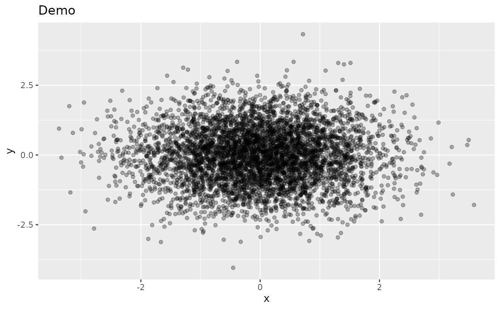
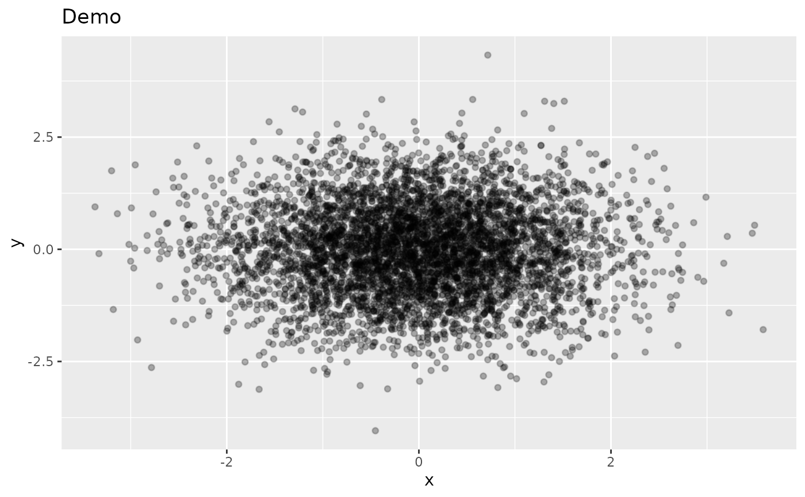
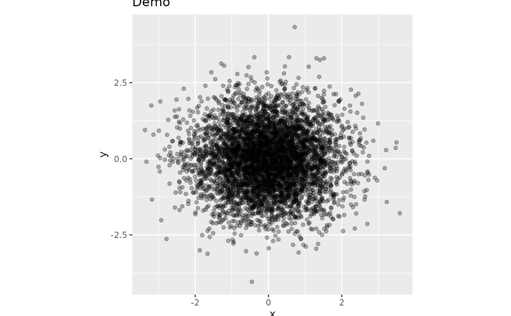
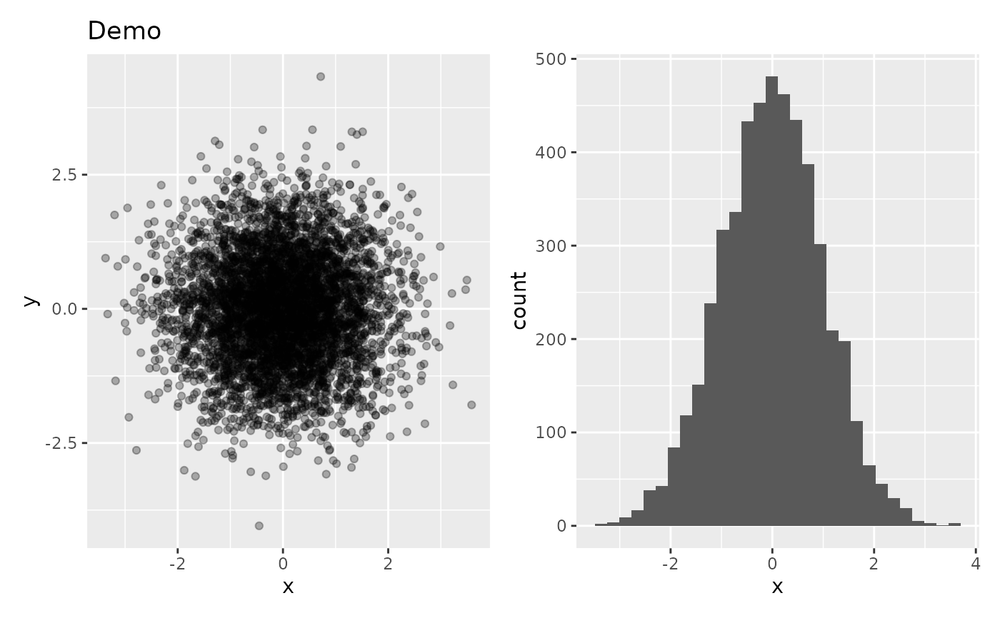

Rasterize geometric layers (points, lines, polygons) in ggplot panels to reduce PDF/SVG file size, while keeping text, axes, and legends as vectors.
Arguments
- plot
A ggplot, patchwork, or list of ggplot objects.
- method
Rasterization backend:
"ggrastr"(default, simple layer-level) or"ragg"(panel-level, also fixes panel size).- dpi
Integer. Rasterization resolution. Default 300.
- width, height
Panel width and height for
method = "ragg". Ignored whenmethod = "ggrastr". IfNULL(default), the current device size is used.- units
Units for
width/height:"in"(default),"cm", or"mm".- dev
Character. Graphics device for
ggrastr::rasterise(). Default"ragg"(high-quality anti-aliasing). Only used whenmethod = "ggrastr".- bg
Character. Background colour for panel rendering. Default
"transparent".
Value
Same type as input: a ggplot, patchwork, or list of ggplot objects.
When method = "ragg", returns a patchwork-wrapped gtable with
a size attribute (list of width, height, units).
Details
Two backends are available:
"ggrastr"Wraps the plot with
ggrastr::rasterise(), which marks all geom layers for rasterization at render time. Simple and fast. Text and theme elements are always preserved as vectors."ragg"Renders each panel to a temporary PNG via
ragg::agg_png(), then reads it back as arasterGrob. Text/label grobs inside the panel are automatically detected and kept as vectors. Requireswidthandheightto be specified (the panel rendering size). This method also fixes the panel size.
How "ragg" preserves text
The function inspects each grob child inside a panel. Children whose name
or class matches text, label, segments, or
legend are kept as vector grobs. All other children (points, lines,
polygons, raster, etc.) are rendered into a single PNG and read back as a
rasterGrob. The two sets are then recombined, so the final output
has crisp vector text on top of a rasterized geometric layer.
See also
Other plot formatting:
fmt_axis(),
fmt_axisText(),
fmt_axisTile(),
fmt_bg(),
fmt_boxplot(),
fmt_com(),
fmt_expand(),
fmt_his(),
fmt_legend(),
fmt_panel(),
fmt_plot(),
fmt_plot_base(),
fmt_point(),
fmt_ref(),
fmt_scale(),
fmt_strip(),
fmt_strip2(),
fmt_tag(),
fmt_text()
Examples
library(ggplot2)
set.seed(42)
df <- data.frame(x = rnorm(5000), y = rnorm(5000))
p <- ggplot(df, aes(x, y)) + geom_point(alpha = 0.3) + ggtitle("Demo")
# ggrastr backend (simple)
fmt_raster(p)

fmt_raster(p, dpi = 150)

# ragg backend (panel-level, also fixes panel size)
fmt_raster(p, method = "ragg", width = 4, height = 4)

# \donttest{
# Works with patchwork
library(patchwork)
p2 <- ggplot(df, aes(x)) + geom_histogram()
fmt_raster(p | p2, method = "ggrastr", dpi = 300)
#> `stat_bin()` using `bins = 30`. Pick better value `binwidth`.

# }